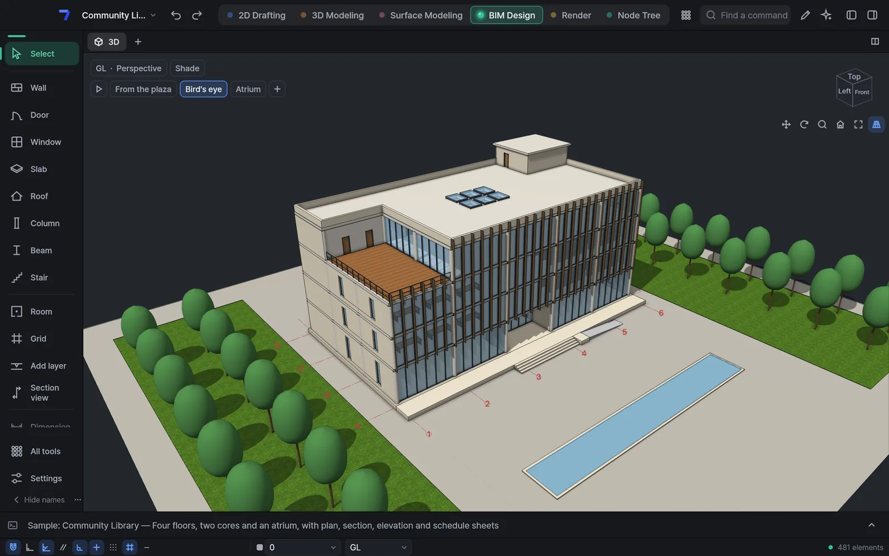
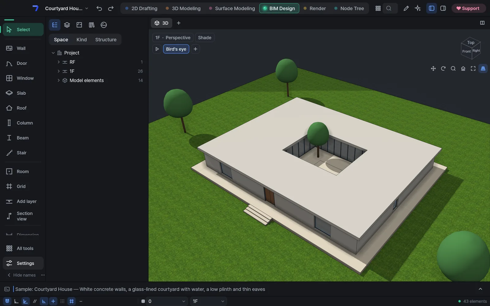
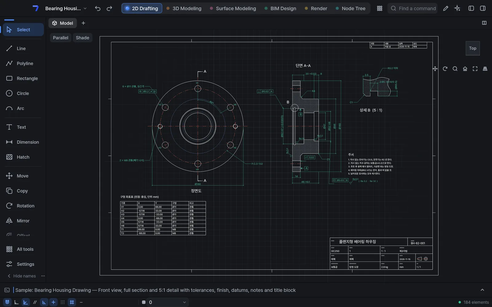
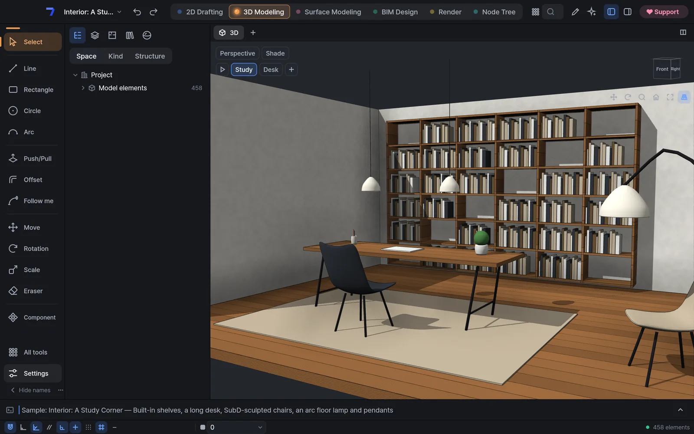
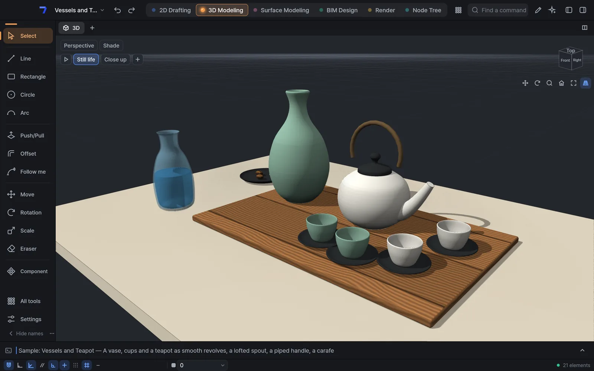

図面からBIMまで、
ひとつのモデルで。
DWG・SKP・3DM・IFCのファイルを行き来していた作業を、ひとつの画面で続けられます。すべての機能を無料で使えます。
無料 · 過去のバージョン
使いにくい点は、アプリの ⌘⇧F（WindowsはCtrl+Shift+F）からお知らせください。
HyperSeven CAD でつくった建物
3D・図面・一覧表・IFC が同じモデルから出てきます。ファイルをダウンロードして、実際に開いてみてください。


AIと話が通じる、
新しいCAD
描いて、建てて、言葉で直す。AIが提案し、決めるのは人です。Hyper AIはログインして自分のAnthropic APIキーをつないで使い、APIの利用料はAnthropicに直接支払います。
 1
2
3
4
5
1
2
3
4
5
いつもどおり
- 12D製図からBIMまで
図面・3D・曲面・BIMを、慣れたやり方で行き来します。
- 2いつものコマンド名
壁・ドア・窓。慣れたコマンド名とショートカットのままです。
AIと一緒に
- 3言葉で指示
「屋上に南向きの太陽光パネルを並べて」
- 4紫の提案
モデルを変える前に、提案として先に見せます。
- 5確定するのは人
チェックを通った提案だけを[Accept]で確定します。
設計自動化カード
AIに任せる業務をカードでつないだテンプレートです。敷地・法規条件・チェック・BIMへ・図面セットのカードはその場で計算し、法規条件は条例・法定上限を出典つきで示します。マス案と要項の読み込みは、Hyper AIかMCPでつないだ自分のAIが担当します。自分で描いたマスも、チェックとBIMが引き継ぎます。敷地の住所と設計要項などの資料を入れると、「要項を読む」カードが要求事項をページ・条項つきでまとめます。
AIと一緒に設計
文字・音声・赤ペンで指示すると、結果は紫の提案として残り、人が承認します。キーをつなぐ前は、AIパネルにできることの一行説明とつなぎ方が表示されます。
AIレンダー
いまのビューの形のまま、写真のような画像をつくります。ComfyUI（このコンピューター）、Stability AI・OpenAI（自分のキー）、カスタムAPIから選べます。
ノードツリー
AIが組んだノードツリーがすぐ開き、人が続けて直せます。繰り返す形はノードとして残し、また使えます。
5つの作業を、ひとつのモデルで
いくつものソフトを行き来していた作業を、ひとつの画面で。使い慣れたコマンド名とショートカットもそのままです。
コマンドラインとエイリアス、スナップ、寸法・ハッチ・ブロックで図面を引きます。
近いツール · AutoCAD
面を押し出してマスを立ち上げ、繰り返すものはコンポーネントにまとめます。
近いツール · SketchUp
NURBSの曲線と曲面を制御点で整え、SubDやメッシュも扱います。
近いツール · Rhino
ノードをつないで形のルールを組み、値を変えながら案を比べます。
近いツール · Grasshopper
壁・ドア・窓・スラブ・屋根・階段で建て、平面・断面・立面と集計表をモデルから出します。
近いツール · Revit · Archicad
図面はモデルから生まれる
16点のサンプルで見る、3Dと図面シート。どれもこのツールでつくったモデルで、スタート画面の「サンプルを見る」から開けます。












1.3で新しくなったところ
寸法の単位
寸法は建築の慣習どおり、mm・小数なしが基本です。寸法を選ぶとインスペクターの「寸法単位」で小数1〜2桁、フィート・インチ、インチに切り替えられ、文書の寸法がまとめて変わります。DWGに書き出すと寸法スタイルも一緒に出るので、AutoCADで編集しても同じ文字のまま。単位のないSTL・OBJ・PLYは、開くときに単位を選びます。
他のソフトのファイルを開く
SketchUpの文字入りファイルと材料だけのファイルを読み込み、最後まで読めなかったファイルはその旨をお知らせします。見つからないUSD参照はファイル名で、DWGの外部参照はカードに名前だけ表示します。平面タブを1:50のように変えても手で入れた寸法が画面上で出力と同じ大きさになり、狭いウィンドウでは上部バーの名前が短くなって重なりません。
回転軸と矢印キー
3Dで回転するとき、下のコマンドラインのX軸・Y軸・Z軸チップで回転軸を選びます。線・移動・コピーでは、矢印キーで基準軸に固定します（→ X · ← Y · ↑ Z（3D） · ↓ 解除）。3Dでズームアウトしても、モデルに付いた文字がモデルと一緒に大きく・小さくなります。
はじめて使う人の目で
住宅とカフェを図面出力・IFCまで実際につくり、つまずいた48か所を直しました。壁の厚さを変えると体積と壁リストも変わり、IFCに書き出して開き直しても窓とドアが残ります。ノートパソコンの画面でも、建築確認チェックのパネルとツールバーが切れません。
問題を報告
ヘルプ › 問題を報告（⌘⇧F）に一行書いて送ると、画面の画像と一緒に開発チームに届き、報告番号が出ます。画像は送る前に確認して外せます。図面ファイルは送りません。修正されると、次にアプリを開いたときにお知らせします。
はじめやすく
スタート画面は「何をしますか？」のひとつだけを聞きます。2D図面・3Dモデル・曲面モデル・建築設計・はじめて、から選ぶと、作業スペース・ツール・ショートカットがまとめて合わせられ、新規文書・サンプル・受け取ったファイルを開くが一番上に並びます。
10分チュートリアル
アプリ内の「10分チュートリアル：自分の家をひとつ」が、次に押す場所を示しながら、壁・ドア・窓・床・屋根・部屋・断面まで一緒に建てます。スタート画面・ヘルプ・⌘Kから選んだときだけ開きます。
次にすること
何も選んでいないとき、インスペクターの一番上に「次にすること」が出ます。平面では、壁を描く・ドアを入れる・窓を入れる・断面をつくる・このビューをPDFに・図面セットをつくるをワンクリックで始められます。
このビューをPDFに、図面セット
用紙と縮尺を選ぶだけで、いま見ている平面・断面・立面・3Dをシートに置いてPDFにします。「図面セットをつくる」は、階ごとの平面、4面の立面、断面を同じ縮尺で1枚ずつ並べ、ひとつのPDFにまとめます。
設計自動化をより正確に
敷地・法規条件・チェック・BIMへ・図面セットのカードはその場で計算します。法規条件は建築確認チェックの設定（住所・用途地域）にある条例・法定上限を出典つきで示し、マス案と要項の読み込みはHyper AIかMCPでつないだ自分のAIが担当します。
韓国語コマンドとノートPCの画面
韓国語のコマンド名はSpaceでも実行できます。幅の狭いノートPCではエクスプローラーをたたんでキャンバスを広げます。⌘Kのすべてのコマンドにひとこと説明がつき、AIがコマンドを誤って呼ぶと、正しい形と例を返します。
どこから来た図面も、
そのまま続きから
受け取ったファイルを開いて作業を続け、相手が使う形式やオープン標準で書き出します。
ラベルのない形式は、開くことも保存することもできます。
- AutoCAD
- DWGDXFR12〜2018形式で保存
- SketchUp
- SKP
- Rhino
- 3DMSTEP
- Grasshopper
- GH読み込み
- Revit
- RVT読み込みRFA読み込みIFC
- Archicad
- IFCIFCでやり取り
- オープン標準
- IFCglTFOBJPDFIFC 2x3・4・4.3
学生にも、設計事務所にも、同じCADを
作図・モデリング・BIM・図面・ファイル、Hyper AIまで、すべての機能が無料です。ライセンスを気にせず学び、同じ道具でそのまま実務へ。事務所に合わせた機能は協業・ご相談からお知らせください。
使い慣れたコマンド名とショートカットで
ほかのCADで覚えたコマンド名とショートカットで探して使えます。初回起動時に「何をしますか？」にひとつ答えるだけで、ワークスペース・ツール・ショートカットがその作業に合わせてそろい、新規文書・例題・受け取ったファイルを開くが一番上に並びます。コマンドエイリアス（acad.pgp）・ペンテーブル（CTB・STB）・テンプレート（DWT）・ブロックのフォルダーも、まとめて取り込めます。
AIと一緒に、決めるのは人
アプリの中でAIに言葉で頼むことも、MCPでエージェントをつなぐこともできます。必要な道具はPythonやプラグインでAIと一緒に作れます。AIの結果は提案として残し、確定するのは人です。
Windows・Mac用 1.3.6
Windows・Macともダウンロードしてインストールします。新しいバージョンが出ると、アプリがお知らせします。
AutoCAD・Revit・DWG・FBXはAutodesk、SketchUpはTrimble、RhinoおよびGrasshopperはRobert McNeel & Associates、ArchicadはGraphisoftの商標です。HyperSeven CADはこれらの企業と提携関係にありません。